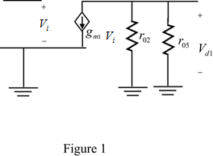
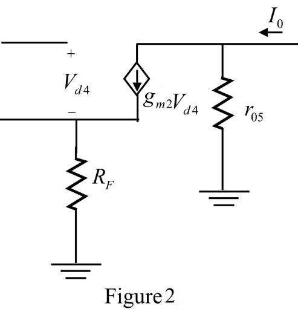
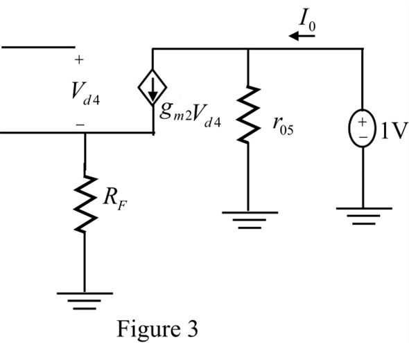

Step 1:
(a)
Refer to Figure P11.58 in the textbook.
Determine the dc voltage at the transistor  .
.
Consider the equation for the gate to source voltage  .
.
Consider and .
Apply Kirchhoff voltage law at  of transistor
of transistor  .
.
…… (1)
Replace 1.2 for , 0.6 for in equation 1.
The voltage at drain of  is equal to the voltage at gate of
is equal to the voltage at gate of  .
.
Therefore, the voltage at the transistor  is
is  .
.
Step 2:
Determine the voltage at the drain of transistor  .
.
The drain voltage at  is equal to drain voltage at
is equal to drain voltage at  .
.
Observe that the transistors  and
and  acts as current mirror. So, the drain current at
acts as current mirror. So, the drain current at
 is equal to the drain current at
is equal to the drain current at  .
.
Hence, the drain voltage of  is equal to the drain voltage of
is equal to the drain voltage of  .
.
But the drain terminal and gate terminal of  is short circuited, so
is short circuited, so
Therefore, the drain voltage of  is equal to the gate voltage of
is equal to the gate voltage of  .
.
.
The voltage at drain of transistor  is 0.6.
is 0.6.
Therefore, the voltage at the drain of transistor  is
is  .
.
Step 3:
Determine the voltage at drain of the transistor  .
.
The voltage at gate of transistor  is equal to the voltage at drain of transistor
is equal to the voltage at drain of transistor  , so .
, so .
Consider the voltage at drain of transistor  is .
is .
Apply Kirchhoff voltage law at  .
.
Therefore, the dc voltage at the output is .
Step 4:
(b)
Determine the expression for close loop gain  .
.

Consider .
Consider .
Step 5:
Consider .
Therefore, the closed loop gain  is .
is .
Step 6:
(c)
Consider the following small-signal equivalent circuit at transistor  :
:

Consider the equation for output voltage .
Step 7:
Consider the following small-signal equivalent circuit at transistor  :
:

Consider is the voltage at the gate terminal of transistor  , which is equal to the voltage at drain of transistor
, which is equal to the voltage at drain of transistor  .
.
Step 8:
Consider the equation for output current .
Step 9:
Determine the open loop gain.
Consider .
Consider .
…… (2)
Step 10:
Consider the drain current through

and

is same and equal to .
Consider the transconductance of  and
and  .
.
Consider the drain current through  is .
is .
Consider the transconductance of  is
is  .
.
Determine the and  .
.
Step 11:
Step 12:
(d)
Determine the output resistance  .
.
Consider the following circuit by open circuiting the load terminal and connecting 1 sourece to determine the .

Apply Kirchhoff’s voltage law at the output node.
….. (3)
Replace 25 for , for , 10
for , for , 10  for in equation 3.
for in equation 3.
Step 13:
Consider the equation for output resistance with feedback.
Consider for  , 2035
, 2035 for and .
for and .
Therefore, the output resistance  is .
is .
(e)
Consider the output is taken as voltage across source of  .
.
From Figure 3 consider the equation for output voltage .
Apply Kirchhoff’s current law at the output terminal.

Consider .
…… (4)
Step 14:
Step 15:
Consider the equation for the closed loop gain .
Consider .

Therefore, the voltage gain  is .
is .
Step 16:
For considering the output voltage at source of  , the circuit offers series-shunt feedback.
, the circuit offers series-shunt feedback.
The feedback gain becomes unity and the circuit acts as a voltage follower circuit.
Determine the output resistance  .
.
Consider and .
Step 17:
Determine the output resistance with feedback .

Consider and  .
.
 for , 200 for
for , 200 for  , 25
, 25 for
for  ,
,  for , 10
for , 10  for
for  in equation 2.
in equation 2. .
. , 200
, 200  for , 25
for , 25 for , for
for , for  , 10
, 10  for
for  in equation 4.
in equation 4.